Analiza jakości powietrza i braków danych ze stacji pomiarowej
Dane godzinowe i minutowe (NO, NO₂, NOₓ, SO₂, O₃, CO, PM10): kompletność pomiarów, kody błędów czujników, korelacje i sezonowość.
Wyniki analiz
Predykcja epizodów smogowych, alerty, zależności cech i jakość danych — dane HM+MM 2018–2026, liczone wprost z plików WFiIS_AQ. Awarie i braki stacji na osobnej stronie Awarie stacji. Rozwiń sekcję w menu, by zobaczyć szczegóły i wykresy.
🚨 Alerty smogowe NN · stan na 2026-05-20 11:00:00 ›
Bieżące PM10: 24.3 µg/m³ (poziom: brak). brak trwającego epizodu · przewidywane godziny smogu (7 dni): 10.7 h
Ryzyko = prawdopodobieństwo przekroczenia progu PM10 w danym horyzoncie (sieć neuronowa CNN+LSTM). Alarm zapala się dla horyzontów 6/24 h; tygodniowy traktowany jako prognoza.
› Historia epizodów PM10 458 epizodów · próg 50.0 µg/m³
Wykryte epizody (ciągi przekroczeń progu z mostkowaniem krótkich spadków). Najdłuższy: 141 h, maks. PM10: 237.6 µg/m³.
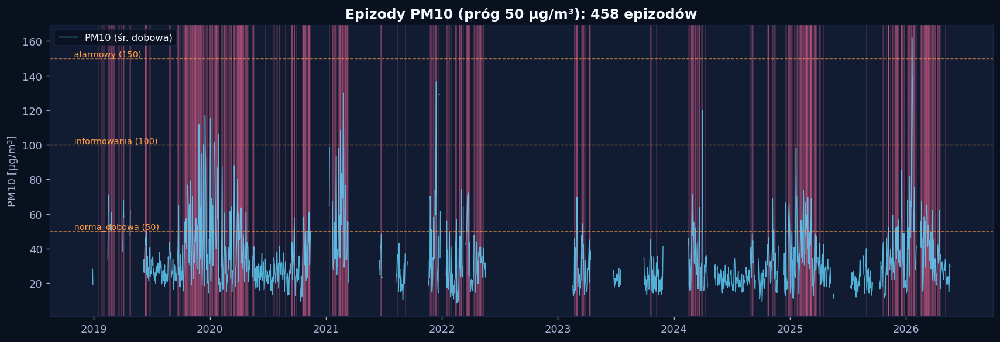
Średnia dobowa PM10 z zaznaczonymi epizodami i progami alarmowymi
| Początek | Koniec | Czas [h] | Szczyt [µg/m³] | Poziom |
|---|---|---|---|---|
| 2026-05-04 21:00:00 | 2026-05-04 23:00:00 | 3 | 61.4 | norma_dobowa |
| 2026-04-18 21:00:00 | 2026-04-19 05:00:00 | 9 | 59.1 | norma_dobowa |
| 2026-04-17 06:00:00 | 2026-04-17 10:00:00 | 5 | 71.1 | norma_dobowa |
| 2026-04-15 07:00:00 | 2026-04-16 22:00:00 | 40 | 84.8 | norma_dobowa |
| 2026-04-11 22:00:00 | 2026-04-12 08:00:00 | 11 | 68.4 | norma_dobowa |
| 2026-04-10 23:00:00 | 2026-04-11 10:00:00 | 12 | 59.9 | norma_dobowa |
| 2026-04-10 03:00:00 | 2026-04-10 09:00:00 | 7 | 64.9 | norma_dobowa |
| 2026-04-04 03:00:00 | 2026-04-04 07:00:00 | 5 | 58.4 | norma_dobowa |
| 2026-04-03 05:00:00 | 2026-04-03 09:00:00 | 5 | 57.7 | norma_dobowa |
| 2026-04-02 07:00:00 | 2026-04-02 09:00:00 | 3 | 55.9 | norma_dobowa |
| 2026-03-29 09:00:00 | 2026-03-29 13:00:00 | 5 | 58.7 | norma_dobowa |
| 2026-03-28 15:00:00 | 2026-03-29 02:00:00 | 12 | 68.2 | norma_dobowa |
› Sezonowość epizodów (skala roku) zima: 48.5% godzin smogu
Szczyt intensywności: Mar. Sezon grzewczy (X–III) = 87.5% godzin smogu, miesiące zimowe (XII–II) = 48.5% przy 33.6% liczby epizodów (epizody zimowe są dłuższe).
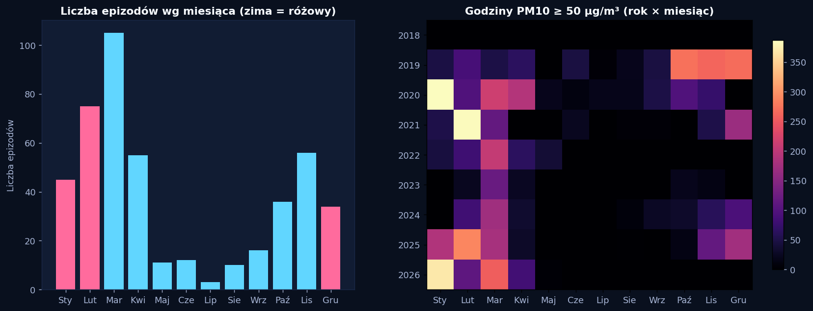
Liczba epizodów wg miesiąca (zima podświetlona) oraz godziny smogu rok × miesiąc
Uwaga: surowa liczba epizodów zależy od pokrycia czujnika (miesiąc z niższym pokryciem wykrywa mniej epizodów). Kolumna epiz./1000 h normalizuje ją względem godzin z ważnym pomiarem — to miara odporna na uptime.
| Miesiąc | Liczba epizodów | Epiz./1000 h | Pokrycie | Godziny smogu | Śr. szczyt [µg/m³] |
|---|---|---|---|---|---|
| Sty | 45 | 14.96 | 50.6% | 1135 | 96.0 |
| Lut | 75 | 19.83 | 69.7% | 1233 | 84.9 |
| Mar | 105 | 22.74 | 77.6% | 1359 | 87.8 |
| Kwi | 55 | 14.78 | 64.6% | 483 | 78.1 |
| Maj | 11 | 5.11 | 37.9% | 62 | 57.1 |
| Cze | 12 | 5.12 | 46.5% | 71 | 65.6 |
| Lip | 3 | 0.98 | 58.7% | 16 | 67.5 |
| Sie | 10 | 3.03 | 63.4% | 43 | 68.1 |
| Wrz | 16 | 6.28 | 50.5% | 122 | 72.9 |
| Paź | 36 | 10.35 | 64.1% | 527 | 84.6 |
| Lis | 56 | 17.21 | 56.5% | 602 | 75.5 |
| Gru | 34 | 14.14 | 40.4% | 730 | 95.7 |
🔮 Predykcja modele onset / czas trwania · sieć neuronowa · zależności cech ›
› Jakość modeli — gradient boosting + meteo
Onset = klasyfikacja przekroczenia progu w horyzoncie; czas trwania = regresja. Metryki na zbiorze testowym (chronologicznym), porównane z baseline „persistence".
| Zadanie (onset) | F1 | ROC-AUC | PR-AUC | Recall | Baseline F1 |
|---|---|---|---|---|---|
| PM10≥50 w 6 h | 0.827 | 0.957 | 0.905 | 0.826 | 0.736 |
| PM10≥50 w 24 h | 0.774 | 0.888 | 0.872 | 0.924 | 0.583 |
| PM10≥50 w 168 h | 0.921 | 0.852 | 0.93 | 1.0 | 0.381 |
| PM10≥100 w 6 h | 0.64 | 0.958 | 0.649 | 0.6 | 0.756 |
| PM10≥100 w 24 h | 0.247 | 0.912 | 0.454 | 0.949 | 0.504 |
| PM10≥100 w 168 h | 0.574 | 0.871 | 0.54 | 0.94 | 0.176 |
| Czas trwania epizodu | MAE [h] | R² | Baseline MAE [h] |
|---|---|---|---|
| próg PM10≥50 | 18.258 | 0.594 | 27.016 |
| próg PM10≥100 | 59.113 | -3.225 | 61.98 |
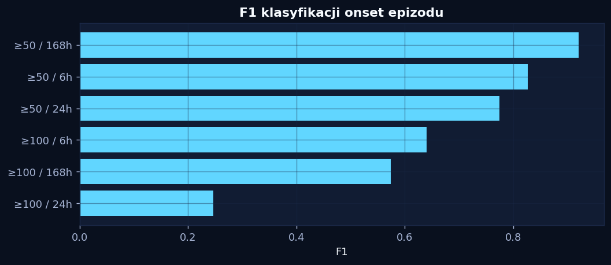
F1 klasyfikacji onset epizodu
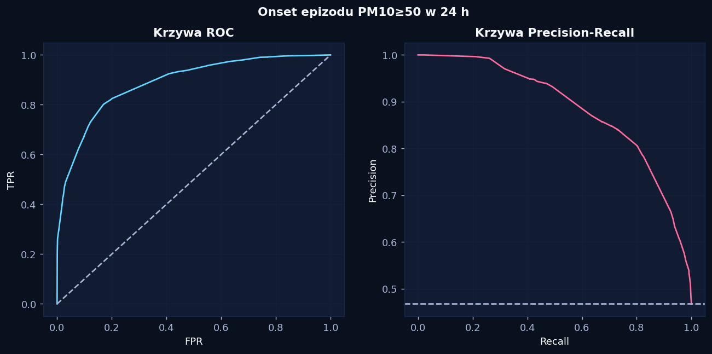
Krzywe ROC i PR (PM10≥50, 24 h)
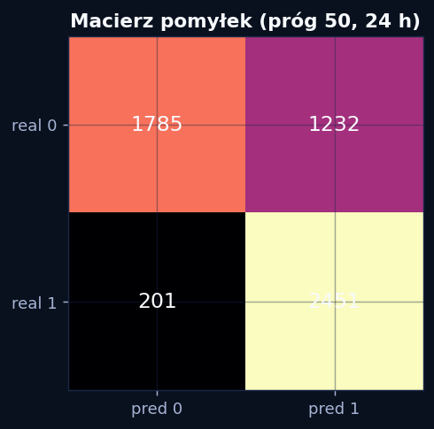
Macierz pomyłek (PM10≥50, 24 h)
› Sieć neuronowa (CNN+LSTM) model alarmów
Wielozadaniowa sieć z okna 72 h: onset 6/24/168 h + przewidywane godziny smogu. To ona zasila alarmy. Na danych z dryfem rozkładu jest konkurencyjna z gradient boostingiem.
| Horyzont | F1 | ROC-AUC | PR-AUC | Recall |
|---|---|---|---|---|
| PM10≥50 w 6 h | 0.807 | 0.946 | 0.897 | 0.825 |
| PM10≥50 w 24 h | 0.783 | 0.874 | 0.881 | 0.865 |
| PM10≥50 w 168 h | 0.943 | 0.872 | 0.978 | 0.989 |
| godziny smogu (7 dni) | MAE 20.665 h · R² 0.253 | |||
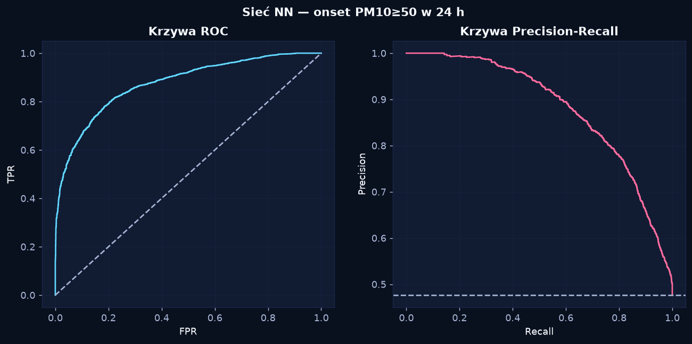
Sieć NN — krzywe ROC i PR (onset 24 h)
› Zależności między cechami analiza wpływu
Współzależności zanieczyszczeń i meteo: informacja wzajemna, korelacja cząstkowa (powiązania bezpośrednie), korelacja z wyprzedzeniem oraz graf zależności. Najsilniejsze dla PM10: CO i prędkość wiatru.
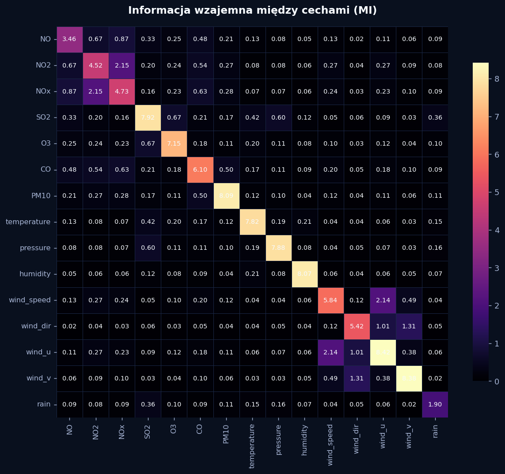
Informacja wzajemna między cechami
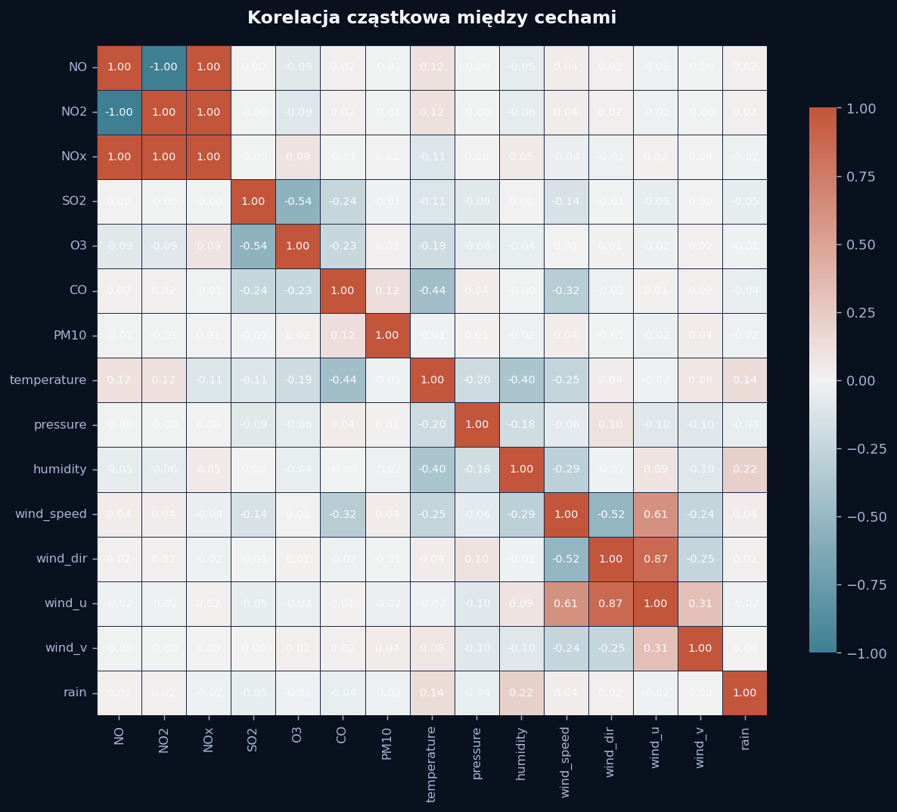
Korelacja cząstkowa (zależności bezpośrednie)
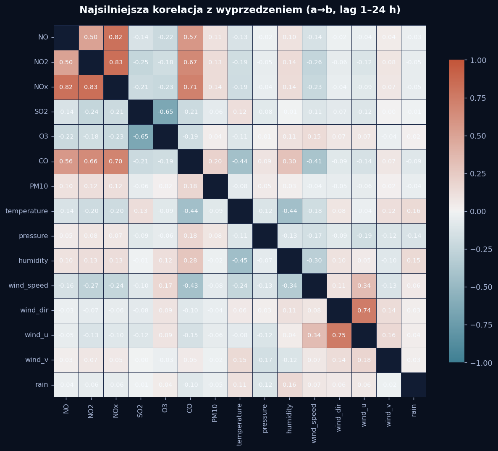
Korelacja z wyprzedzeniem (a → b)
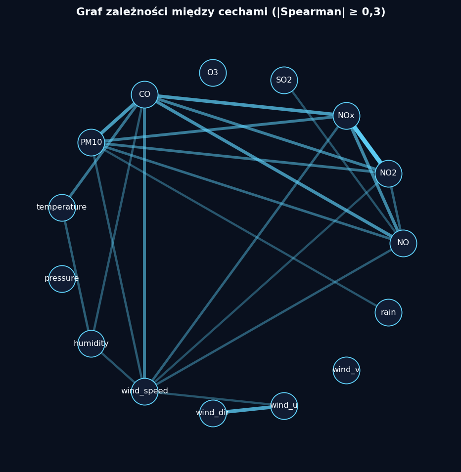
Graf zależności (|Spearman| ≥ 0,3)
📊 Dane i analiza sensory · korelacje · sezonowość · meteo ›
› Pokrycie i statystyki sensorów 2018-10-23 – 2026-05-20
Dane godzinowe (HM+MM, 62503 wierszy). Tylko pomiary z prawidłowym kodem statusu.
| Sensor | Ważne pomiary | Pokrycie | Średnia | Mediana | P95 | Odch. std |
|---|---|---|---|---|---|---|
| NO | 57019 | 91.2% | 0.0015 | 0.0004 | 0.004 | 0.0063 |
| NO2 | 55931 | 89.5% | 0.0039 | 0.0018 | 0.0154 | 0.0062 |
| NOx | 57392 | 91.8% | 0.0053 | 0.0022 | 0.0195 | 0.011 |
| SO2 | 10270 | 16.4% | 5.1082 | 4.24 | 11.781 | 3.3165 |
| O3 | 43399 | 69.4% | 80.359 | 82.0 | 160.1 | 48.0176 |
| CO | 62503 | 100.0% | 0.271 | 0.202 | 0.667 | 0.1943 |
| PM10 | 37664 | 60.3% | 33.8578 | 27.7 | 76.9185 | 22.6068 |
› Korelacje, trendy i sezonowość sensorów 3 wykresy
Zależności między zanieczyszczeniami, tendencje długoterminowe oraz rozkład miesięczny stężeń.
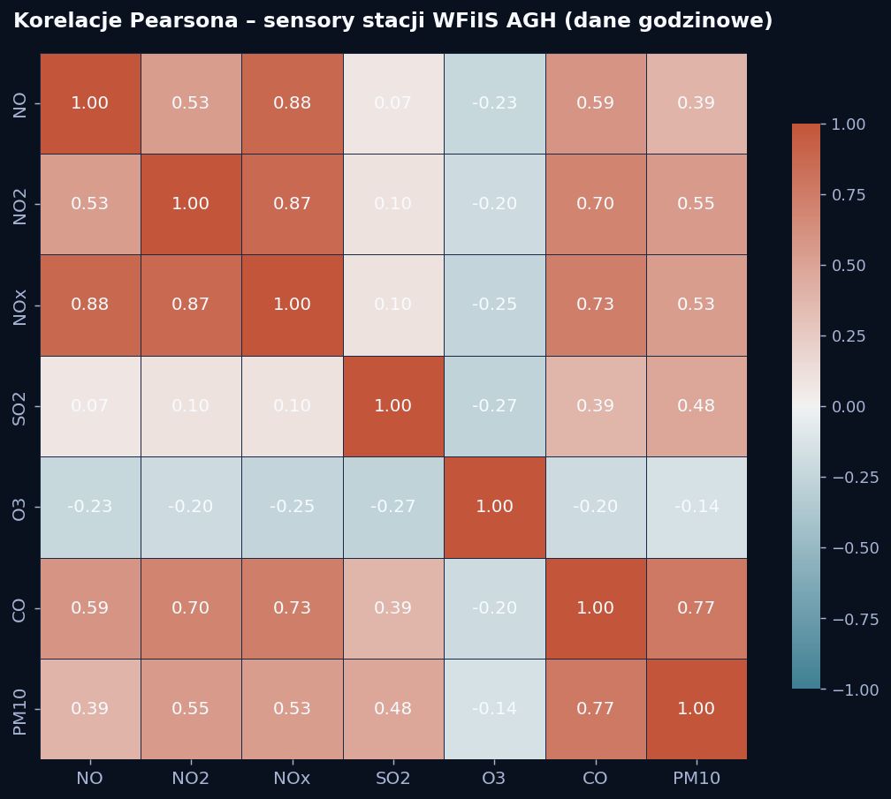
Macierz korelacji Pearsona między sensorami
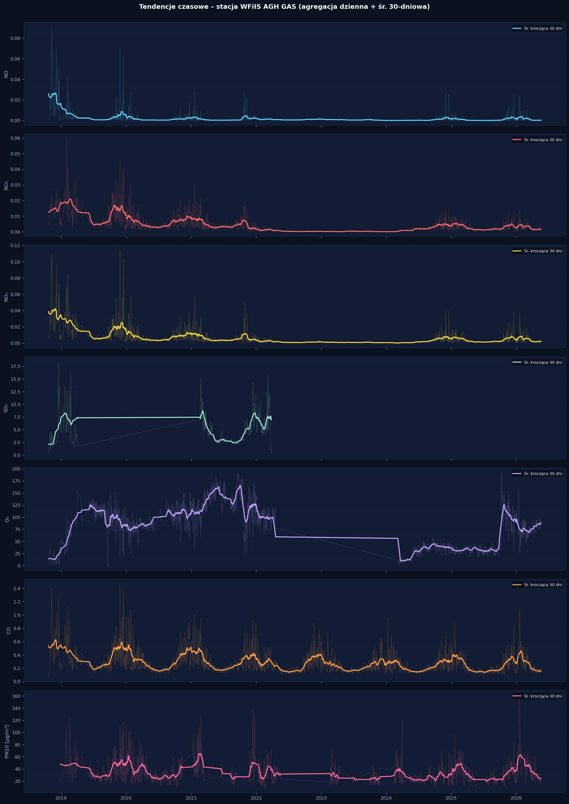
Tendencje długoterminowe – agregacja dzienna + śr. 30 dni
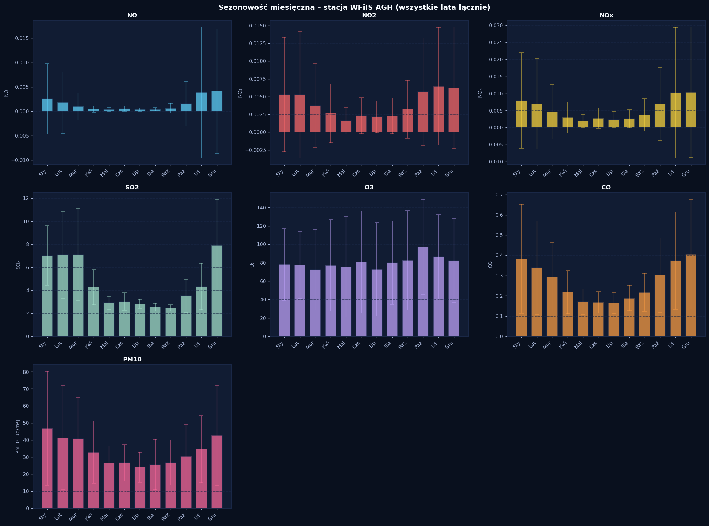
Sezonowość miesięczna – rozkład per miesiąc (wszystkie lata)
› Dane meteorologiczne 2018-01-01 – 2026-09-30
Parametry meteo ze stacji meteo2 WFiIS AGH (76680 godzin), używane jako cechy modeli.
| Parametr | Średnia | Min | Maks | Pokrycie |
|---|---|---|---|---|
| Temperatura [°C] | 10.2 | -18.1 | 37.2 | 100.0% |
| Ciśnienie [hPa] | 988.0 | 956.0 | 1016.2 | 100.0% |
| Wilgotność [%] | 76.6 | 9.0 | 100.0 | 100.0% |
| Wiatr [m/s] | 3.1 | 0.0 | 20.0 | 100.0% |
| Kierunek wiatru [°] | 153.2 | 0.0 | 360.0 | 100.0% |
| Opad | 0.4 | 0.0 | 35.6 | 100.0% |
🧪 Jakość danych i preprocessing korekty czyszczenia · porównanie STEP-0/1/2 ›
Wpływ korekt jakości danych na wyniki modeli. Kluczowa poprawka — usunięcie sentinela 985 µg/m³ (kod overflow analizatora przeciekający przez status „valid”) — zmniejszyła RMSE prognoz sześciokrotnie i usunęła ponad połowę fałszywych godzin „alarmowych”.
Brak wykresów porównawczych — wygeneruj je do plots/porownanie_steps_*.png.
› Wprowadzone korekty przed → po
Polityka statusów ustalona empirycznie (profilowanie wartości per czujnik), nie z dokumentacji.
| Korekta | Przed | Po | Efekt |
|---|---|---|---|
| Sentinel 985 µg/m³ (kod overflow analizatora) | max 985 · 267 godz. „alarmu” ≥150 | max 646 · 115 godz. ≥150 | Przeciekał przez status 40/01 (147 godz. w combined). Fizyczny cap 900 µg/m³. RMSE prognoz spadło ×6 (42→7), R² GBM +1h 0.58→0.90. |
| SO₂ status „22” — saturacja czujnika | ~29,5 tys. „valid” (65% to artefakt 386 µg/m³) | 10,3 tys. realnych (mediana ~4 µg/m³) | Płaski klaster 340–513 µg/m³ (std ~11) = awaria, nie realny SO₂. Usunięty; valid = {02}. |
| PM10 — rozszerzone statusy „wątpliwe” | tylko status 40 | 40, 21, 04, 01 (HM) | Statusy 21/04/01 niosą realny, zmienny sygnał (uniq/n 0.66–0.93). Odrzucone: 00 (stuck), 80/82 (awaria), 99 (brak). |
| Modele okienne (LSTM / sieć alertów) — cechy gęste | ~2,7 tys. okien (R² 0.11) | ~31,5 tys. okien (R² 0.70) | Rzadkie czujniki głodziły kompletne okna 72 h. LSTM/episode_net na PM10+meteo+czas; GBM bierze wszystkie czujniki natywnie (NaN). |
Awarie stacji mierników
Detekcja awarii i braków pomiarowych liczona wprost z plików WFiIS_AQ (HM+MM, 2018-10-23 – 2026-05-20): kompletność, brakujące godziny, awarie czujnika PM10, log zdarzeń i legenda kodów Status;Error. Rozwiń sekcję w menu, by zobaczyć szczegóły.
🧭 Kompletność wg źródła pomiaru osobno: dane godzinowe (HM), minutowe (MM) i seria łączona ›
Braki liczone osobno dla każdego toru oraz dla serii połączonej (MM uzupełnia luki HM). „Pokrycie PM10" = udział godzin z ważnym pomiarem PM10.
| Źródło | Kompletność | Pokrycie PM10 | Godziny obecne | Braki [h] |
|---|---|---|---|---|
| HM (godzinowe) | 93.1% | 46.11% | 61813 | 4583 |
| MM (minutowe) | 93.15% | 56.39% | 61848 | 4548 |
| Łącznie (HM+MM) | 94.14% | 56.73% | 62503 | 3893 |
📉 Dni z brakami pomiarowymi TOP 50 dni o najniższej kompletności ›
Liczba brakujących godzin, awarie PM10, najdłuższa ciągła przerwa i status stacji (OK / NIESTABILNA / MARTWA STACJA).
| Data | Brakujące h | Awarie PM10 | Max przerwa [h] | Kompletność | Status |
|---|---|---|---|---|---|
| 2019-03-13 | 24 | 0 | 24 | 0.0% | MARTWA STACJA |
| 2019-05-20 | 24 | 0 | 24 | 0.0% | MARTWA STACJA |
| 2019-03-15 | 24 | 0 | 24 | 0.0% | MARTWA STACJA |
| 2019-03-16 | 24 | 0 | 24 | 0.0% | MARTWA STACJA |
| 2019-03-18 | 24 | 0 | 24 | 0.0% | MARTWA STACJA |
| 2019-03-19 | 24 | 0 | 24 | 0.0% | MARTWA STACJA |
| 2019-03-20 | 24 | 0 | 24 | 0.0% | MARTWA STACJA |
| 2019-03-21 | 24 | 0 | 24 | 0.0% | MARTWA STACJA |
| 2019-03-23 | 24 | 0 | 24 | 0.0% | MARTWA STACJA |
| 2019-03-24 | 24 | 0 | 24 | 0.0% | MARTWA STACJA |
| 2019-03-25 | 24 | 0 | 24 | 0.0% | MARTWA STACJA |
| 2019-03-27 | 24 | 0 | 24 | 0.0% | MARTWA STACJA |
| 2019-03-29 | 24 | 0 | 24 | 0.0% | MARTWA STACJA |
| 2019-03-30 | 24 | 0 | 24 | 0.0% | MARTWA STACJA |
| 2019-03-31 | 24 | 0 | 24 | 0.0% | MARTWA STACJA |
| 2019-04-01 | 24 | 0 | 24 | 0.0% | MARTWA STACJA |
| 2019-05-19 | 24 | 0 | 24 | 0.0% | MARTWA STACJA |
| 2019-03-14 | 24 | 0 | 24 | 0.0% | MARTWA STACJA |
| 2019-03-12 | 24 | 0 | 24 | 0.0% | MARTWA STACJA |
| 2019-04-07 | 24 | 0 | 24 | 0.0% | MARTWA STACJA |
| 2019-03-11 | 24 | 0 | 24 | 0.0% | MARTWA STACJA |
| 2019-02-11 | 24 | 0 | 24 | 0.0% | MARTWA STACJA |
| 2019-02-12 | 24 | 0 | 24 | 0.0% | MARTWA STACJA |
| 2019-02-17 | 24 | 0 | 24 | 0.0% | MARTWA STACJA |
| 2019-02-18 | 24 | 0 | 24 | 0.0% | MARTWA STACJA |
| 2019-02-20 | 24 | 0 | 24 | 0.0% | MARTWA STACJA |
| 2019-02-21 | 24 | 0 | 24 | 0.0% | MARTWA STACJA |
| 2019-02-23 | 24 | 0 | 24 | 0.0% | MARTWA STACJA |
| 2019-02-24 | 24 | 0 | 24 | 0.0% | MARTWA STACJA |
| 2019-02-28 | 24 | 0 | 24 | 0.0% | MARTWA STACJA |
| 2019-03-01 | 24 | 0 | 24 | 0.0% | MARTWA STACJA |
| 2019-03-03 | 24 | 0 | 24 | 0.0% | MARTWA STACJA |
| 2019-03-04 | 24 | 0 | 24 | 0.0% | MARTWA STACJA |
| 2019-03-06 | 24 | 0 | 24 | 0.0% | MARTWA STACJA |
| 2019-03-08 | 24 | 0 | 24 | 0.0% | MARTWA STACJA |
| 2019-03-10 | 24 | 0 | 24 | 0.0% | MARTWA STACJA |
| 2019-04-06 | 24 | 0 | 24 | 0.0% | MARTWA STACJA |
| 2019-04-08 | 24 | 0 | 24 | 0.0% | MARTWA STACJA |
| 2019-02-08 | 24 | 0 | 24 | 0.0% | MARTWA STACJA |
| 2019-04-28 | 24 | 0 | 24 | 0.0% | MARTWA STACJA |
| 2019-04-30 | 24 | 0 | 24 | 0.0% | MARTWA STACJA |
| 2019-05-01 | 24 | 0 | 24 | 0.0% | MARTWA STACJA |
| 2019-05-02 | 24 | 0 | 24 | 0.0% | MARTWA STACJA |
| 2019-05-03 | 24 | 0 | 24 | 0.0% | MARTWA STACJA |
| 2019-05-04 | 24 | 0 | 24 | 0.0% | MARTWA STACJA |
| 2019-05-05 | 24 | 0 | 24 | 0.0% | MARTWA STACJA |
| 2019-05-06 | 24 | 0 | 24 | 0.0% | MARTWA STACJA |
| 2019-05-07 | 24 | 0 | 24 | 0.0% | MARTWA STACJA |
| 2019-05-08 | 24 | 0 | 24 | 0.0% | MARTWA STACJA |
| 2019-05-09 | 24 | 0 | 24 | 0.0% | MARTWA STACJA |
📋 Podsumowanie zdarzeń typy wykrytych błędów: braki i awarie ›
Zliczenie typów zdarzeń wykrytych w danych: MISSING_HOUR (cisza stacji — brak rekordu godzinowego), PM10_FAILURE (stacja działa, ale pomiar PM10 nieważny wg statusu).
| Typ błędu | Liczba wystąpień |
|---|---|
| MISSING_HOUR | 3893 |
| PM10_FAILURE | 24839 |
🧾 Log zdarzeń ostatnie 200 wykrytych zdarzeń ›
Najświeższe wykryte zdarzenia w porządku malejącym po czasie.
| Czas | Typ |
|---|---|
| 2026-04-30 15:00 | PM10_FAILURE |
| 2026-03-26 08:00 | PM10_FAILURE |
| 2026-03-26 07:00 | PM10_FAILURE |
| 2026-03-26 06:00 | PM10_FAILURE |
| 2026-02-26 16:00 | PM10_FAILURE |
| 2026-02-16 13:00 | PM10_FAILURE |
| 2026-02-16 12:00 | PM10_FAILURE |
| 2026-02-16 11:00 | PM10_FAILURE |
| 2026-02-16 10:00 | PM10_FAILURE |
| 2026-02-16 09:00 | PM10_FAILURE |
| 2026-02-16 08:00 | PM10_FAILURE |
| 2026-02-16 07:00 | PM10_FAILURE |
| 2026-02-16 06:00 | PM10_FAILURE |
| 2026-02-16 05:00 | PM10_FAILURE |
| 2026-02-16 04:00 | PM10_FAILURE |
| 2026-02-16 03:00 | PM10_FAILURE |
| 2026-02-16 02:00 | PM10_FAILURE |
| 2026-02-16 01:00 | PM10_FAILURE |
| 2026-02-16 00:00 | PM10_FAILURE |
| 2026-02-15 23:00 | PM10_FAILURE |
| 2026-02-15 22:00 | PM10_FAILURE |
| 2026-02-15 21:00 | PM10_FAILURE |
| 2026-02-15 20:00 | PM10_FAILURE |
| 2026-02-15 19:00 | PM10_FAILURE |
| 2026-02-15 18:00 | PM10_FAILURE |
| 2026-02-15 17:00 | PM10_FAILURE |
| 2026-02-15 16:00 | PM10_FAILURE |
| 2026-02-15 15:00 | PM10_FAILURE |
| 2026-02-15 14:00 | PM10_FAILURE |
| 2026-02-15 13:00 | PM10_FAILURE |
| 2026-02-15 12:00 | PM10_FAILURE |
| 2026-02-15 11:00 | PM10_FAILURE |
| 2026-02-15 10:00 | PM10_FAILURE |
| 2026-02-15 09:00 | PM10_FAILURE |
| 2026-02-15 08:00 | PM10_FAILURE |
| 2026-02-15 07:00 | PM10_FAILURE |
| 2026-02-15 06:00 | PM10_FAILURE |
| 2026-02-15 05:00 | PM10_FAILURE |
| 2026-02-15 04:00 | PM10_FAILURE |
| 2026-02-15 03:00 | PM10_FAILURE |
| 2026-02-15 02:00 | PM10_FAILURE |
| 2026-02-15 01:00 | PM10_FAILURE |
| 2026-02-15 00:00 | PM10_FAILURE |
| 2026-02-14 23:00 | PM10_FAILURE |
| 2026-02-14 22:00 | PM10_FAILURE |
| 2026-02-14 21:00 | PM10_FAILURE |
| 2026-02-14 20:00 | PM10_FAILURE |
| 2026-02-14 19:00 | PM10_FAILURE |
| 2026-02-14 18:00 | PM10_FAILURE |
| 2026-02-14 17:00 | PM10_FAILURE |
| 2026-02-14 16:00 | PM10_FAILURE |
| 2026-02-14 15:00 | PM10_FAILURE |
| 2026-02-14 14:00 | PM10_FAILURE |
| 2026-02-14 13:00 | PM10_FAILURE |
| 2026-02-14 12:00 | PM10_FAILURE |
| 2026-02-14 11:00 | PM10_FAILURE |
| 2026-02-14 10:00 | PM10_FAILURE |
| 2026-02-14 09:00 | PM10_FAILURE |
| 2026-02-14 08:00 | PM10_FAILURE |
| 2026-02-14 07:00 | PM10_FAILURE |
| 2026-02-14 06:00 | PM10_FAILURE |
| 2026-02-14 05:00 | PM10_FAILURE |
| 2026-02-14 04:00 | PM10_FAILURE |
| 2026-02-14 03:00 | PM10_FAILURE |
| 2026-02-14 02:00 | PM10_FAILURE |
| 2026-02-14 01:00 | PM10_FAILURE |
| 2026-02-14 00:00 | PM10_FAILURE |
| 2026-02-13 23:00 | PM10_FAILURE |
| 2026-02-13 22:00 | PM10_FAILURE |
| 2026-02-13 21:00 | PM10_FAILURE |
| 2026-02-13 20:00 | PM10_FAILURE |
| 2026-02-13 19:00 | PM10_FAILURE |
| 2026-02-13 18:00 | PM10_FAILURE |
| 2026-02-13 17:00 | PM10_FAILURE |
| 2026-02-13 16:00 | PM10_FAILURE |
| 2026-02-13 15:00 | PM10_FAILURE |
| 2026-02-13 14:00 | PM10_FAILURE |
| 2026-02-13 13:00 | PM10_FAILURE |
| 2026-02-13 12:00 | PM10_FAILURE |
| 2026-02-13 11:00 | PM10_FAILURE |
| 2026-02-13 10:00 | PM10_FAILURE |
| 2026-02-13 09:00 | PM10_FAILURE |
| 2026-02-13 08:00 | PM10_FAILURE |
| 2026-02-13 07:00 | PM10_FAILURE |
| 2026-02-13 06:00 | PM10_FAILURE |
| 2026-02-13 05:00 | PM10_FAILURE |
| 2026-02-13 04:00 | PM10_FAILURE |
| 2026-02-13 03:00 | PM10_FAILURE |
| 2026-02-13 02:00 | PM10_FAILURE |
| 2026-02-13 01:00 | PM10_FAILURE |
| 2026-02-13 00:00 | PM10_FAILURE |
| 2026-02-12 23:00 | PM10_FAILURE |
| 2026-02-12 22:00 | PM10_FAILURE |
| 2026-02-12 21:00 | PM10_FAILURE |
| 2026-02-12 20:00 | PM10_FAILURE |
| 2026-02-12 19:00 | PM10_FAILURE |
| 2026-02-12 18:00 | PM10_FAILURE |
| 2026-02-12 17:00 | PM10_FAILURE |
| 2026-02-12 16:00 | PM10_FAILURE |
| 2026-02-12 15:00 | PM10_FAILURE |
| 2026-02-12 14:00 | PM10_FAILURE |
| 2026-02-12 13:00 | PM10_FAILURE |
| 2026-02-12 12:00 | PM10_FAILURE |
| 2026-02-12 11:00 | PM10_FAILURE |
| 2026-02-12 10:00 | PM10_FAILURE |
| 2026-02-12 09:00 | PM10_FAILURE |
| 2026-02-12 08:00 | PM10_FAILURE |
| 2026-02-12 07:00 | PM10_FAILURE |
| 2026-02-12 06:00 | PM10_FAILURE |
| 2026-02-12 05:00 | PM10_FAILURE |
| 2026-02-12 04:00 | PM10_FAILURE |
| 2026-02-12 03:00 | PM10_FAILURE |
| 2026-02-12 02:00 | PM10_FAILURE |
| 2026-02-12 01:00 | PM10_FAILURE |
| 2026-02-12 00:00 | PM10_FAILURE |
| 2026-02-11 23:00 | PM10_FAILURE |
| 2026-02-11 22:00 | PM10_FAILURE |
| 2026-02-11 21:00 | PM10_FAILURE |
| 2026-02-11 20:00 | PM10_FAILURE |
| 2026-02-11 19:00 | PM10_FAILURE |
| 2026-02-11 18:00 | PM10_FAILURE |
| 2026-02-11 17:00 | PM10_FAILURE |
| 2026-02-11 16:00 | PM10_FAILURE |
| 2026-02-11 15:00 | PM10_FAILURE |
| 2026-02-11 14:00 | PM10_FAILURE |
| 2026-02-11 13:00 | PM10_FAILURE |
| 2026-02-11 12:00 | PM10_FAILURE |
| 2026-02-11 11:00 | PM10_FAILURE |
| 2026-02-11 10:00 | PM10_FAILURE |
| 2026-02-11 09:00 | PM10_FAILURE |
| 2026-02-11 08:00 | PM10_FAILURE |
| 2026-02-11 07:00 | PM10_FAILURE |
| 2026-02-11 06:00 | PM10_FAILURE |
| 2026-02-11 05:00 | PM10_FAILURE |
| 2026-02-11 04:00 | PM10_FAILURE |
| 2026-02-11 03:00 | PM10_FAILURE |
| 2026-02-11 02:00 | PM10_FAILURE |
| 2026-02-11 01:00 | PM10_FAILURE |
| 2026-02-11 00:00 | PM10_FAILURE |
| 2026-02-10 23:00 | PM10_FAILURE |
| 2026-02-10 22:00 | PM10_FAILURE |
| 2026-02-10 21:00 | PM10_FAILURE |
| 2026-02-10 20:00 | PM10_FAILURE |
| 2026-02-10 19:00 | PM10_FAILURE |
| 2026-02-10 18:00 | PM10_FAILURE |
| 2026-02-10 17:00 | PM10_FAILURE |
| 2026-02-10 16:00 | PM10_FAILURE |
| 2026-02-10 15:00 | PM10_FAILURE |
| 2026-02-10 14:00 | PM10_FAILURE |
| 2026-02-10 13:00 | PM10_FAILURE |
| 2026-02-10 12:00 | PM10_FAILURE |
| 2026-02-10 11:00 | PM10_FAILURE |
| 2026-02-10 10:00 | PM10_FAILURE |
| 2026-02-10 09:00 | PM10_FAILURE |
| 2026-02-10 08:00 | PM10_FAILURE |
| 2026-02-10 07:00 | PM10_FAILURE |
| 2026-02-10 06:00 | PM10_FAILURE |
| 2026-02-10 05:00 | PM10_FAILURE |
| 2026-02-10 04:00 | PM10_FAILURE |
| 2026-02-10 03:00 | PM10_FAILURE |
| 2026-02-10 02:00 | PM10_FAILURE |
| 2026-02-10 01:00 | PM10_FAILURE |
| 2026-02-10 00:00 | PM10_FAILURE |
| 2026-02-09 23:00 | PM10_FAILURE |
| 2026-02-09 22:00 | PM10_FAILURE |
| 2026-02-09 21:00 | PM10_FAILURE |
| 2026-02-09 20:00 | PM10_FAILURE |
| 2026-02-09 19:00 | PM10_FAILURE |
| 2026-02-09 18:00 | PM10_FAILURE |
| 2026-02-09 17:00 | PM10_FAILURE |
| 2026-02-09 16:00 | PM10_FAILURE |
| 2026-02-09 15:00 | PM10_FAILURE |
| 2026-02-09 14:00 | PM10_FAILURE |
| 2026-02-09 13:00 | PM10_FAILURE |
| 2026-02-09 12:00 | PM10_FAILURE |
| 2026-02-09 11:00 | PM10_FAILURE |
| 2026-02-09 10:00 | PM10_FAILURE |
| 2026-02-09 09:00 | PM10_FAILURE |
| 2026-02-09 08:00 | PM10_FAILURE |
| 2026-02-09 07:00 | PM10_FAILURE |
| 2026-02-09 06:00 | PM10_FAILURE |
| 2026-02-09 05:00 | PM10_FAILURE |
| 2026-02-09 04:00 | PM10_FAILURE |
| 2026-02-09 03:00 | PM10_FAILURE |
| 2026-02-09 02:00 | PM10_FAILURE |
| 2026-02-09 01:00 | PM10_FAILURE |
| 2026-02-09 00:00 | PM10_FAILURE |
| 2026-02-08 23:00 | PM10_FAILURE |
| 2026-02-08 22:00 | PM10_FAILURE |
| 2026-02-08 21:00 | PM10_FAILURE |
| 2026-02-08 20:00 | PM10_FAILURE |
| 2026-02-08 19:00 | PM10_FAILURE |
| 2026-02-08 18:00 | PM10_FAILURE |
| 2026-02-08 17:00 | PM10_FAILURE |
| 2026-02-08 16:00 | PM10_FAILURE |
| 2026-02-08 15:00 | PM10_FAILURE |
| 2026-02-08 14:00 | PM10_FAILURE |
| 2026-02-08 13:00 | PM10_FAILURE |
| 2026-02-08 12:00 | PM10_FAILURE |
| 2026-02-08 11:00 | PM10_FAILURE |
🔑 Kody Status;Error interpretacja statusów czujników przy walidacji ›
Semantyka statusu jest per czujnik (ustalona profilowaniem wartości). „valid” = realny, zmienny sygnał w fizycznym zakresie; odrzucamy stuck / saturację / brak.
| Kod | Czujnik | Znaczenie |
|---|---|---|
40;10 | PM10 | OKPomiar poprawny – status „valid” w analizie |
21;10 | PM10 | UWAGAPomiar wątpliwy (maintenance) – realny sygnał, włączony do analizy |
1;10 | PM10 | UWAGANiski status – realny pomiar poza zakresem, włączony do analizy |
0;10 | PM10 | AWARIATryb serwisowy – wartość zamrożona (stuck 19.53), odrzucana |
80;2 | PM10 | AWARIAAwaria sprzętowa – błąd kalibracji/hardware typ 2 (sentinel 985) |
80;1 | PM10 | AWARIAAwaria sprzętowa – błąd hardware typ 1 |
80;8 | PM10 | AWARIAAwaria – błąd komunikacji z czujnikiem |
80;10 | PM10 | AWARIAAwaria czujnika – tryb serwisowy/maintenance |
99;99 | PM10 | AWARIABrak danych – wartość=9999, czujnik wyłączony lub awaria |
02;xx | SO2 | OKPomiar SO₂ poprawny (realny sygnał, mediana ~4 µg/m³) |
22;xx | SO2 | AWARIASaturacja/awaria – zamrożony klaster ~386 µg/m³, odrzucany |
02;xx | O3 | OKPomiar O₃ poprawny (w tym kanale „02” nie jest błędem) |
00;00 | CO | OKPomiar CO poprawny |
00;04 | CO | UWAGABłąd zerowania CO / niski sygnał – pomiar niepewny |
02;00 | CO | AWARIABłąd kalibracji CO |